Bridging the Gap Between Perception and Reasoning in Computer Vision
Matt Klawonn
Advisor: James Hendler
Information Retrieval from Images
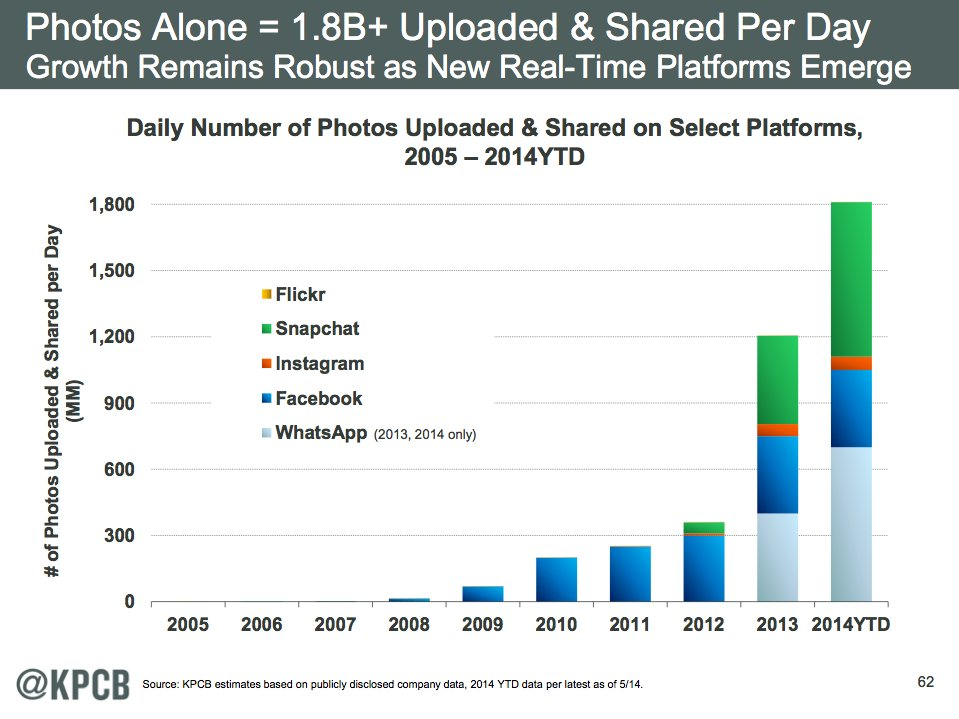Image courtesy of Business Insider showing increase in web images.
Current Image Processing Tasks
Object Detection
Detect the objects, potentially with bounding boxes.
Image Captioning
Produce a natural language description of the image.
Visual Question Answering
Answer a natural language question about the image, using natural language.
Image courtesy of WCWD
Perception vs Reasoning
Perception
Extract information immediately available from the image.
Example: What are the people doing?
Reasoning
Extract information available through logical techniques.
Who is the mother of the groom?
Image courtesy of WCWD
Bridging the Gap
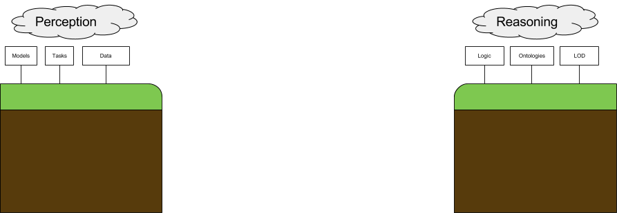Proposal
In this work, I define necessary conditions for an image representation generated by a perceptual model to be used by a reasoning system. My work proposes to learn perceptual models for the purpose of extracting information from images, while also yielding outputs suitable to be used with reasoning technologies.
Tbox and Abox
Reasoning systems can be thought of in terms of a Tbox, Abox, and Reasoner. We are proposing to generate an Abox for use in a reasoning system.
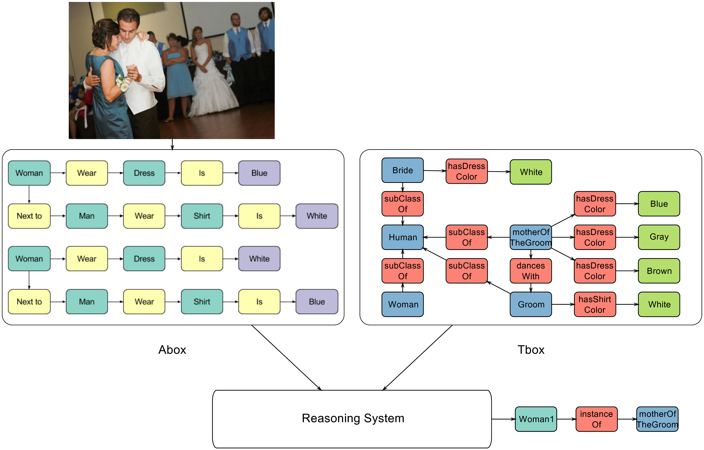The difference between a tbox and abox
Necessary Condition 1:
Graph Structured Representation
Assertions in an Abox are represented as triples (De et Al 1996, Lassila et Al 1999). Triples are subject-predicate-object statements about semantic data. A collection of triples naturally forms a graph when subjects and objects are shared amongst statements. (Stokman et Al 1988) was among the first to suggest representing knowledge in graphical form due to its clear structure and access to graph theoretical tools. Thus we propose to produce graphical outputs from images to form an Abox.
Necessary Condition 2:
Provenance Included
Prior work (McGuinness and Pinheiro 2004, Ribeiro et Al 2016) argues that trust is critical for the deployment of perceptual and reasoning models alike. In fact certain reasoning systems rely on explanations in order to reach conclusions (Bonacina 2017). As such I propose to build on previous work in machine learning explainability to capture an increased amount of provenance for a perceptual model's prediction.
Talk Overview
- Scene Graph Generation
- Outline of Task
- Previous Work and Problems
- More Flexible Approach
- Future Improvements
- Provenance Generation
- ML and Explainability
- Issues with Prior Approaches
- Proof of Concept New Approach
- Discussion and Summary
Talk Overview
- Scene Graph Generation
- Outline of Task
- Previous Work and Problems
- More Flexible Approach
- Future Improvements
- Provenance Generation
- ML and Explainability
- Issues with Prior Approaches
- Proof of Concept New Approach
- Discussion and Summary
Scene Graph Generation
Scene graphs, proposed in (Johnson et Al 2015), offer a way to structure information from an image. A scene graph is a graph describing an image. Nodes can be objects or attributes. Edges are relationships between nodes.
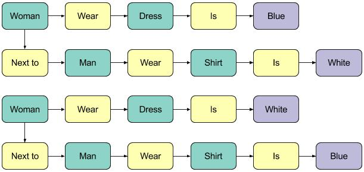Why Scene Graphs?
- Natural Representation
- Clear Structure
- Links Different Image Portions Together
- Can Include Attributes and Relations
Prior Works
A number of works have attempted the difficult task of scene graph generation. There are a few problems with these works that fall into some common categories.
No Attributes
Some models do not generate a type of triple called attributes.
Scene graph with and without attributes.
Triples Only
Some models only generate triples, and do not construct a graph. Further, this may be compounded with not producing attributes.
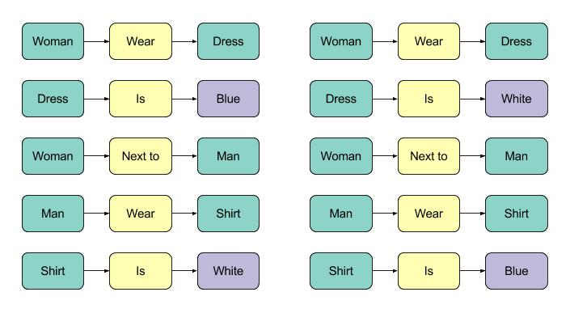A collection of triples alone.
Bounding Boxes Required
Some models add a bounding box regression term to their loss functions.

Example of a predicted and ground truth bounding box.
Overcoming Limitations
With a method capable of generating proper scene graphs with attributes and without using bounding boxes, it would be possible to enable attribute based reasoning (mother of the groom) and construct datasets more easily. Towards the latter, there are natural language techniques for creating scene graphs from captions (Anderson et Al 2016).
My Work
(Klawonn and Heim), my work, proposes to overcome each of the outlined issues of prior work through various techniques.
Generating Attributes
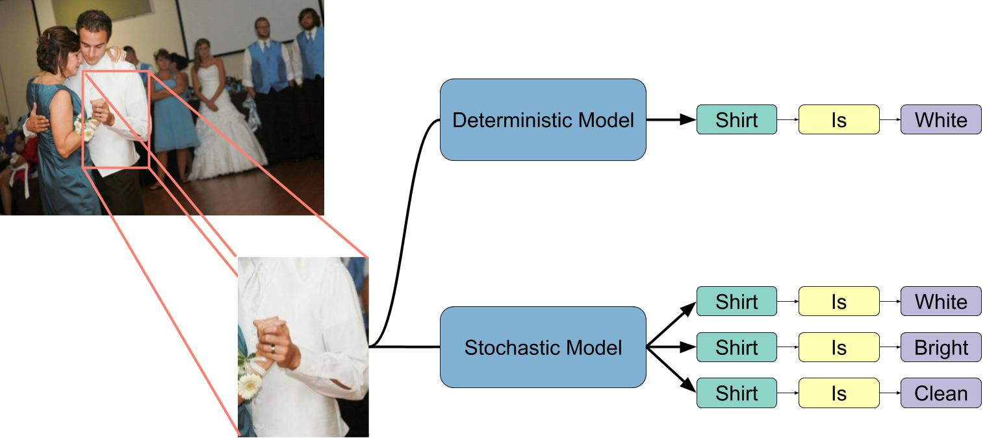Stochasticity allows for multiple outputs per input.
Replacing Bounding Boxes
Which woman/man is it referring to?

Triples cannot be made into a graph without reconciling objects.
Solution: Attention
Attention, proposed in (Xu et al 2015), spatially grounds predictions in the input image.

Image courtesy of (Xu et al 2015)
Bottom Up Approach
Producing a graph in a single prediction step seems difficult given the outlined requirements. Is it possible to learn to predict triples and construct a graph?
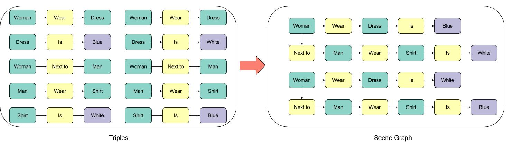Going from triples to a graph.
Training Setup
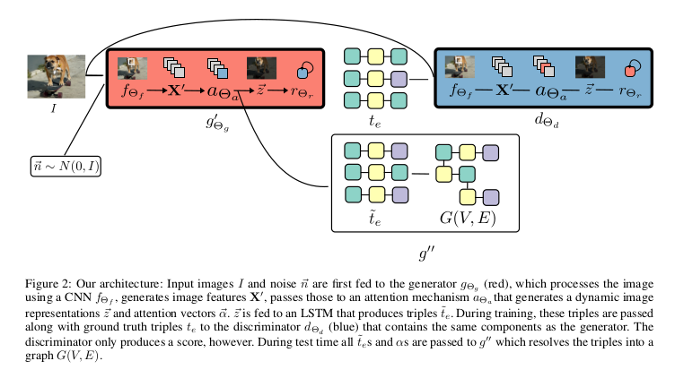Approach of (Klawonn and Heim)
Results: Measuring Performance
Methods are evaluated using a recall at k metric (proposed in xuetal2017, higher is better):
$\frac{\left| \mbox{k Generated Triples } \cap \mbox{ Ground Truth Triples} \right|}{\left|\mbox{Ground Truth Triples}\right|}$
Results: Evaluation Dataset
The first results follow exactly the split of (Xu et Al 2017), which has a vocabulary containing 50 relations and 150 objects. Note that this split does not contain attributes.
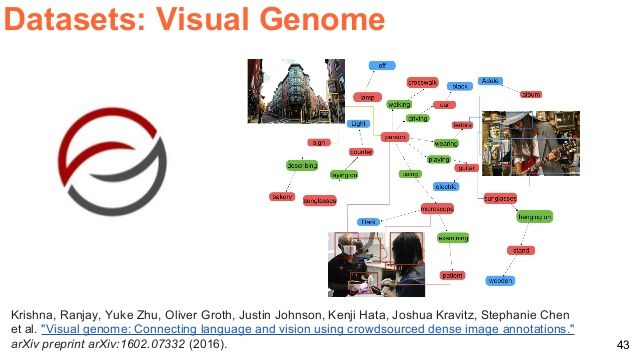Visual Genome Logo
Results: Models I "Beat"
| Paper | Approach | Bounding Boxes | Generates Attributes | Generates Proper Graph | R @ 50 |
|---|---|---|---|---|---|
| (Klawonn and Heim 2018) | Triples to Graph | No | Yes | Yes | 6.84 |
| (Lu et Al 2016) | Visual Model, Language Priors | No | No | No | 0.32 |
| (Xang et Al 2017) | "Parallel Pairwise Recurrent Fully Convolutional Networks" | Yes | No | No | 2.41 |
| (Xu et Al 2017) | Iterative Message Passing | Yes | No | Yes | 3.44 |
Results: Models I "Don't Beat"
| Paper | Approach | Bounding Boxes | Generates Attributes | Generates Proper Graph | R @ 50 |
|---|---|---|---|---|---|
| (Klawonn and Heim 2018) | Triples to Graph | No | Yes | Yes | 6.84 |
| (Li et Al 2017) | Objects, Phrases, and Region Captions | Yes | No | Yes | 10.72 |
| (Newell et Al 2017) | Associative Embeddings | Yes | No | Yes | 9.7 |
Results: New Evaluation Split
We also evaluate on a custom split, which has 300 objects, 100 relations, and 100 attributes. On this split, we achieve a R @ 50 of 2.47. This should be easy to improve.
Example without Attributes
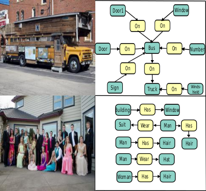Example scene graph without attributes.
Example with Attributes
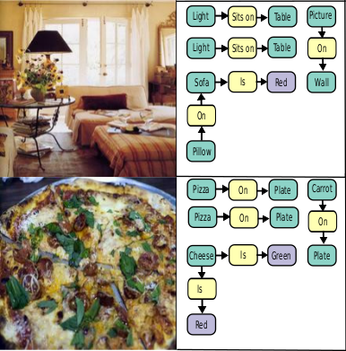Example scene graph with attributes.
Potential Improvements
- Train the CNN
- Triple Relaxation
- Train on New Data
Bridging the Gap
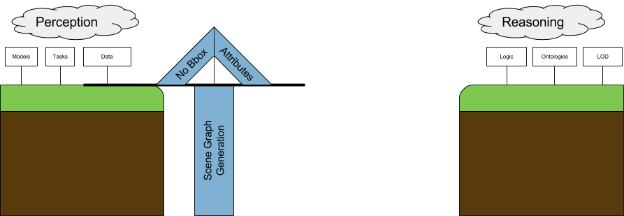Scene graphs partially bridge the gap.
Improving Trust
In order for these scene graphs to be used as input to a reasoning system of some kind, their outputs must be trustworthy. Next I'll explore how this can be achieved.
Talk Overview
- Scene Graph Generation
- Outline of Task
- Previous Work and Problems
- More Flexible Approach
- Future Improvements
- Provenance Generation
- ML and Explainability
- Issues with Prior Approaches
- Proof of Concept New Approach
- Discussion and Summary
The Need for Provenance
Prior work, e.g (McGuinness and Pinheiro 2004), argues that the key to trust is understanding. In order to trust the conclusions made by a reasoning system, they must be explained in such a way that they can be understood. Further, some reasoning systems, e.g conflict driven reasoners, would significantly benefit from explanations of certain predictions.
Without Provenance
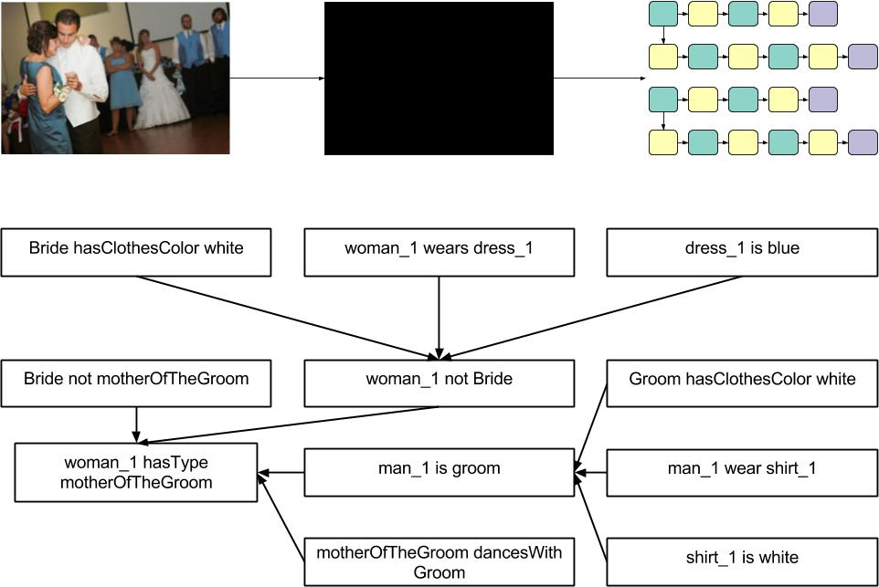Explaining predictions without provenance for the generating model.
Current ML Provenance
The majority of prior work (Ribeiro et Al 2016, Yosinksi et Al 2015) chooses to explain predictions by illustrating what features were important to the model. They tend not to say, however, what those features are, i.e assign semantics to them.
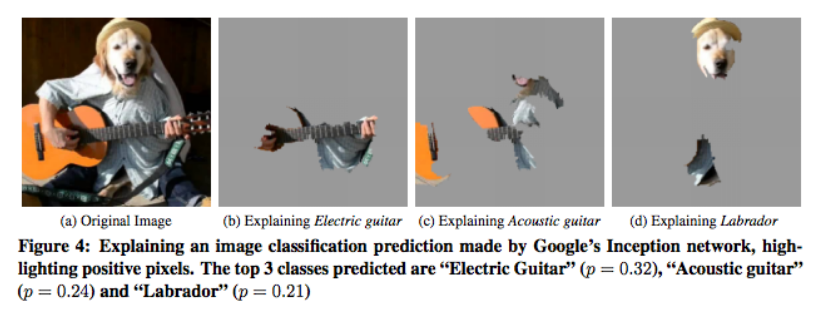Approach of (Ribeiro et Al 2016)
Feature Importance as Provenance

Explaining with visualizations.
Need for Symbolic Provenance
Symbolic provenance, i.e provenance represented by symbols from some taxonomy (natural language, ontologies, etc):
- Is queryable
- Is usable by non-human agents
- Offers more information than a visual explanation alone
Using Attributes as Provenance
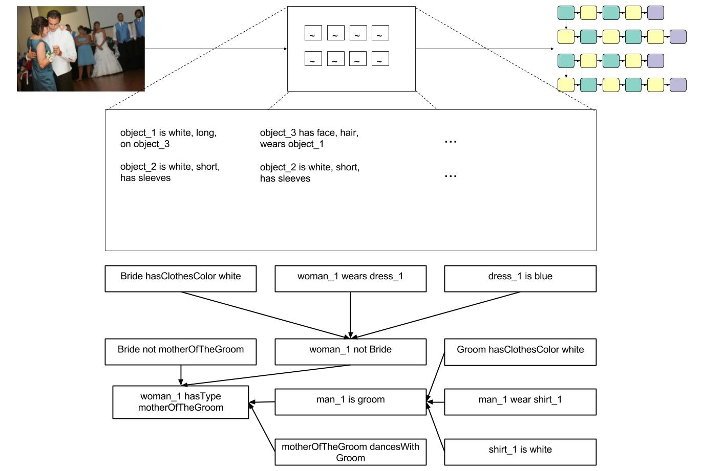Explaining using attributes.
Desirable Characteristics of Provenance Capturing
- Symbolic Provenance
- No Black Boxes
- Must Work for Deep Models
Deep Models and Human Recognizable Features
Image courtesy of Roelof Peters
Analyzing Deep Models
We would like some way of analyzing nodes and groups of nodes to see if some of them map to human recognizable features. Learning a direct mapping from neuron activations to human recognizable features may be tricky because many features in deep models are clearly not human recognizable.
Using Graph Fourier Transforms
Graph Fourier Tranforms:
- Decompose the signal on a particular node in terms of eigenvectors and eigenvalues (graph spectra)
- Offer a means of filtering out low frequency features of the graph
- May allow for cleaner mapping from neuron activations to recognizable features
From GFT to Human Recognizable Features
- Train a deep network on a dataset where inputs have attributes
- Compute GFT
- Filter undesirable eigenvectors
- Compute Inverse GFT for penultimate Layer
- Create attribute-activation pair, where activations are the filtered penultimate activations
Success Relies On ...
- Deep models must learn some human recognizable features
- Spectra of deep models must accurately measure learned features
- A filter must be well defined to remove non-human features
Current Implementation Details
- The deep model we analyze is a CNN with 3 convolutional layers and 2 f.c layers
- I use multilabel KNN to map from activations to attribute vectors (K=5)
- A little under 6300 train and test images each
- 64 named attributes
Creating a Baseline
Because we are interested in comparing to how well the filtered version of neuron activations maps to attributes, the obvious comparison is to the unfiltered version, i.e the neuron activations prior to filtering.
Evaluation
I currently use recall and precision to evaluate the performance of my model, in addition to qualitative analysis. I could also use embedding visualization techniques and/or clustering to see how well images separate with their filtered activations.
Preliminary Results
| Metric | Unfiltered | GFT-Filtered |
|---|---|---|
| Precision | 15.03 | 17.41 |
| Recall | 28.03 | 31.60 |
Example Symbolic Provenance
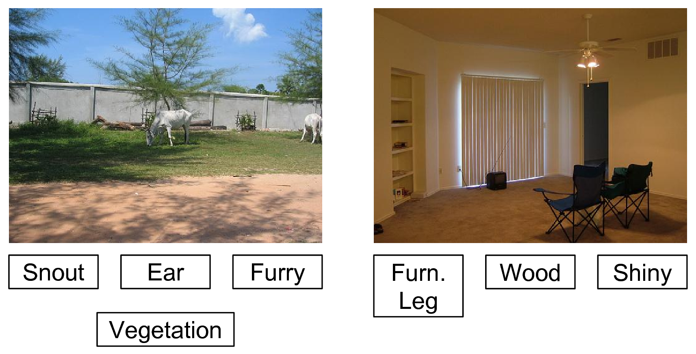Example attributes as symbolic provenance that were generated using my method.
Future Experimentation
- Determine whether or not eigenvectors capture deep features
- Try different filters
- More datasets and more deep models
- Different multilabel learning algorithms
Talk Overview
- Scene Graph Generation
- Outline of Task
- Previous Work and Problems
- More Flexible Approach
- Future Improvements
- Provenance Generation
- ML and Explainability
- Issues with Prior Approaches
- Proof of Concept New Approach
- Discussion and Summary
Symbolic Provenance
Doing enough evaluation on the provenance generation is going to be critical for showing that it works. I will need a variety of models and data to test my Fourier transform approach, but I believe that there are sufficiently many data sets and model combinations to get a good evaluation.
SGG is Hard
Scene Graph Generation is still very difficult, because it combines multiple tasks into one problem, such as object recognition, relationship detection, graph prediction, etc. The best systems still have a ways to go before their outputs are useable.
Stretch Goal: Human-like navigation
From current navigation to human-like navigation.
Stretch Goal: Photojournalist Story Summary
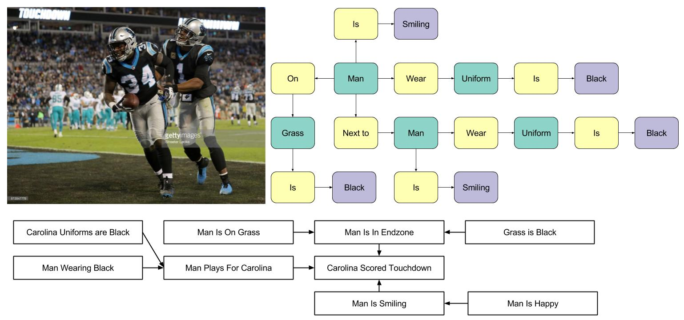Deducing conclusions of an event from images.
Tangential Work: Knowledge Base from Images
With the ability to generate scene graph training data from captions, it may be possible to train a model in a weakly supervised setting. Given that this training process would have virtually unlimited training data, it would be interesting to allow it to run continuously on data from the Web and construct a simplistic "knowledge graph," or collection of knowledge about the relationships between and attributes of classes.